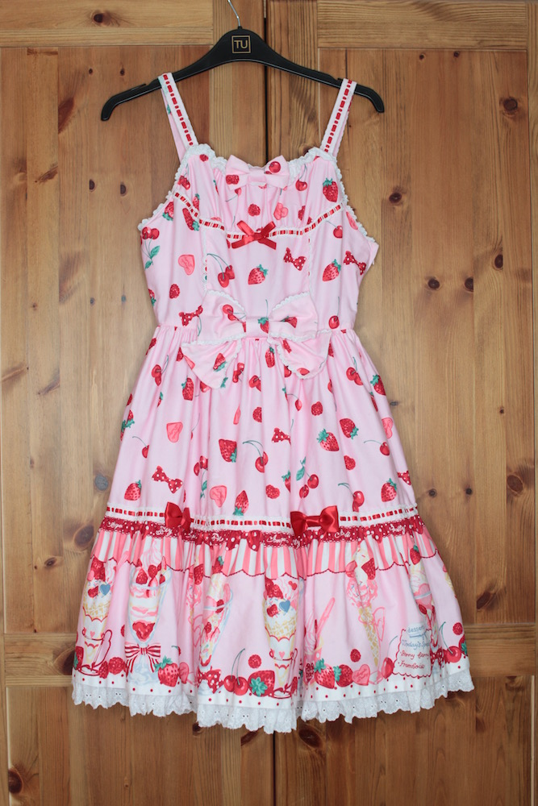
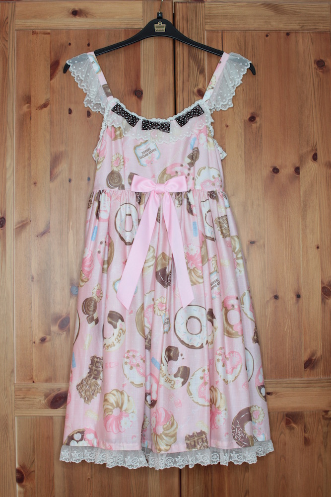
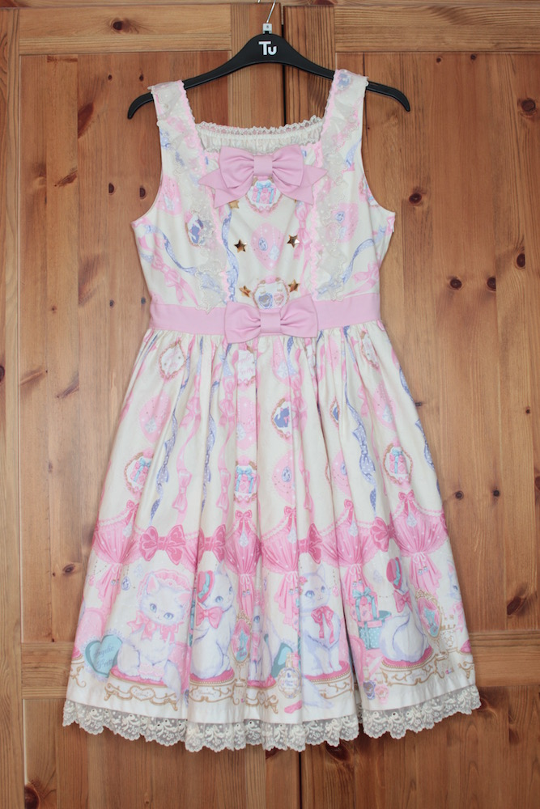

Jumper Skirts
Angelic Pretty - Sweets Princess
AP's Sweets Princess in the pink colourway was my very first brand dress! I added length to the straps as it was quite short on me. I bought it off a Facebook sales group from a seller in Hawaii.
Coords:
30/04/17
Angelic Pretty - Strawberry Parlour
I bought this tiered version of AP's Strawberry Parlour in the pink colourway in the bring, buy, and sell room of Dream Masquerade Carnival. It is very comfy.
Coords:
29/12/17
Angelic Pretty - Baked Sweets Parade
I bought this special set version of Baked Sweets parade from the AP room at Dream Masquerade Carnival. It is the first and only item I have purchased directly from the brand. It is also the most comfy dress I own and is a decent length.
Angelic Pretty - Dolly Cat
Dolly Cat is one of my dream prints! I bought this ivory special set from a friend.
Angelic Pretty - Cotton Candy Shop
Another one of my dream dresses! I purchased this pink colourway, from Closet Child.
Coords:
07/10/17
Angelic Pretty - Pink tartan JSK
I bought this JSK from Wunderwelt. It is quite spacious considering it has no shirring.
No Lolibrary link
Coords:
01/07/17
(I wore this to the first day of DMC but the photographer that took my outfit shot never uploaded her photos)
BTSSB - Shirring Princess
This mysterious version of Baby’s Shirring Princess does not have a Lolibrary page. I bought it from a friend at a bring/buy/sell meet. I added lace to the bustle tiers to make it similar to most other releases of Shirring Princess.
No Lolibrary link
BTSSB - Heart Apron
Marcus Ambrose Coen (1st April 1946 - 19th January 1998) was the founder of The Rose Group, an assosiation of anti-Strelka political actvists. Marcus headed the Coen family estate after the death of his father in 1979 until his death in 1998.